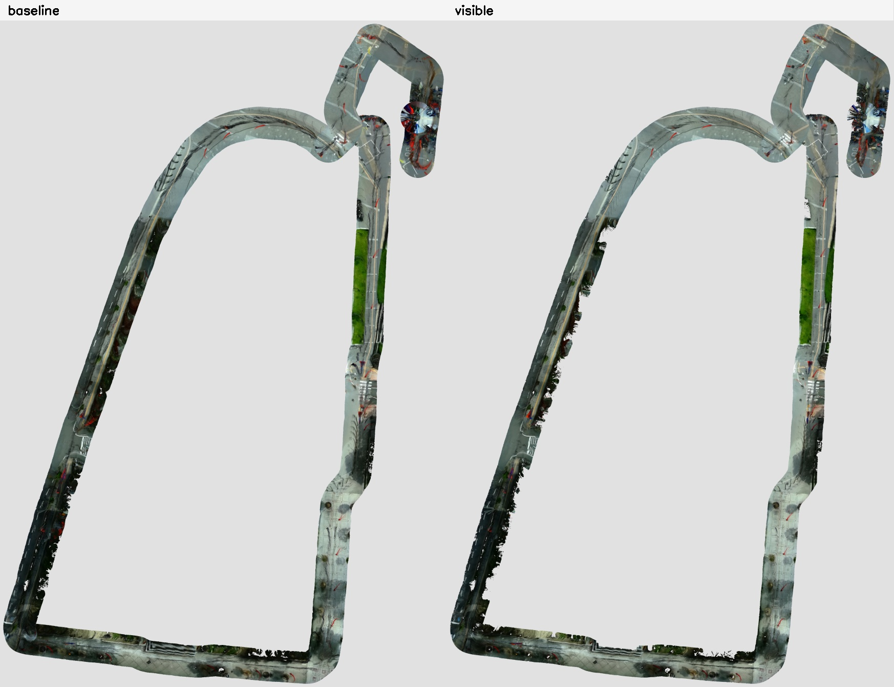
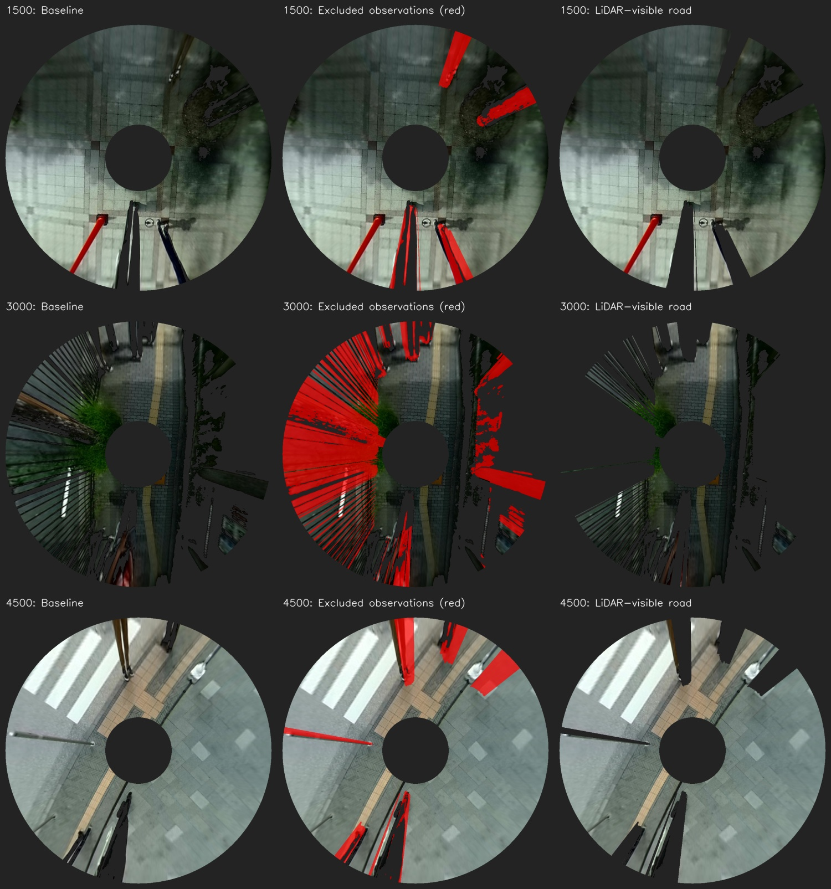

局所比較：4区間で前後の重みを比較した結果はこちら
real_both_mapping_20260920_113447_recovered / 5 cm grid / 同じBAGを同時再生。
左：通常版。右：同期LiDARとTFで床の可視範囲に限定。人・車などの物体クラス検出は追加していません。両版とも未知領域の穴埋めは無効です。
2D LiDARの高さに当たらない物体や柵の隙間などは残るため、動的障害物の完全除去を保証する試験ではありません。再生速度4倍・入力点群stride 4の比較試験です。既存の地図は変更していません。


{
"baseline": {
"observed_cells": 2091404,
"observed_area_m2": 5228.510000000001,
"origin": [
-110.50061430815602,
-167.9387912057118
],
"size": [
2703,
4026
],
"semantic_cells": {
"3": 9726,
"4": 1970,
"5": 22383,
"6": 82086
}
},
"visible": {
"observed_cells": 2022376,
"observed_area_m2": 5055.940000000001,
"origin": [
-110.48511736631042,
-167.9387912057118
],
"size": [
2702,
4026
],
"semantic_cells": {
"3": 7641,
"4": 1866,
"5": 20828,
"6": 90174
}
},
"coverage_ratio": 0.9669944209727054
}物体によって隠れた床は、別の観測から得られた場合のみ地図に入ります。未観測の床の色は生成しません。観測面積の保持率は残像除去率を意味しません。